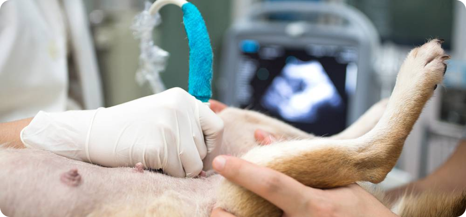

Терапия
Записаться на приём к терапевту
Петр
Петрович
Иван
Иванович
Сергей
Сергеевич
Терапия в нашей клинике
Терапия -область гуманной и ветеринарной медицины, занимающаяся непосредственно лечением патологий, облегчением состояния больного и устранением симптомов заболеваний.
Терапевтическое отделение клиники Айболит занимается диагностикой и лечением следующих болезней:
- органов пищеварения;
- органов сердечно-сосудистой системы;
- нервной системы;
- органов мочевыделительной системы;
- эндокринной системы;
- нарушения обмена веществ;
- кожи и ее производных;
- органов чувств;
- репродуктивной области;
- токсикологической природы
- инфекционной и инвазионной природы;
- органов дыхательной системы.
Подзаголовок 1
В нашей клинике имеются как врачи-терапевты общей практики, так и узкие специалисты по ряду перечисленных областей, что дает возможность излечивать тяжелые и редкие случаи патологий.
Врач-терапевт подходит к лечению животного комплексно, предварительно изучив его анамнез, учитывая возраст, пол, породу, наличие хронических болезней, условия содержания, типа кормления, оценив общее состояние питомца, полностью осмотрев его и назначив необходимую диагностику и соответствующее лечение.
Врачи клиники имеют широкий спектр диагностических возможностей, что является идеальным условием для постановки точного диагноза, а значит и назначения того лечения, которое наиболее эффективно справится с данным конкретным клиническим случаем.
Некоторую диагностику можно провести тут же на месте в течение буквально нескольких минут, что немаловажно для экстренных случаев и значительно экономят время владельцам:
Подзаголовок 2
Большинство исследований, требующих седации (эндоскопия, МРТ, лапароскопия), так же доступны в течение суток. Более сложные анализы, такие как бактериологический посев, гормоны, гистологическое исследование мы направляем в дистанционную лабораторию.
Получив результаты исследований врач приступает к анализу причин и механизмов развития болезни и назначает лечение. Оно может быть медикаментозным (домашним или стационарным) или оперативным (экстренным или плановым).
Эффективность терапии в большой степени зависит и от владельца животного, ведь именно ему необходимо будет соблюдать предписания врача, вовремя давать препараты или ставить уколы, следить за развитием динамики и симптомов, чтобы вовремя оповестить врача о происходящих изменениях, для своевременной коррекции лечения.
Кроме лечения терапевты занимаются и профилактикой заболеваний. Доктора с удовольствием расскажут вам основы выращивания, содержания и кормления питомца, графики дегельминтизаций и прививок. Оформят ветеринарный паспорт и чипируют ваше животное.
Цены
Цены указаны без учета расходоных материалов
| Приём | 320 руб. |
| Приём повторный | 220 руб. |
| Консультация без осмотра | 350 руб. |
| Консультация без осмотра | 350 руб. |
| Вызов врача на дом | 1000 руб. |
| Полная выписка из истории болезни | 500 руб. |